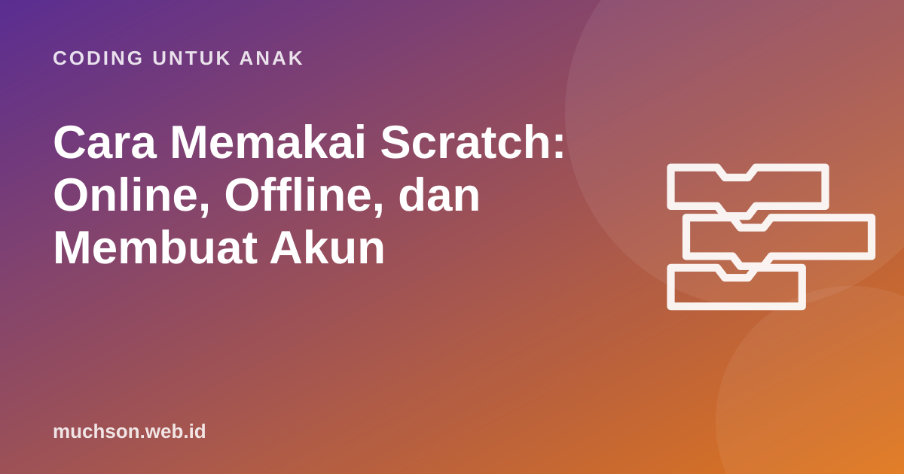

Beranda › Artikel › Coding untuk Anak
Coding untuk AnakCara Memakai Scratch: Online, Offline, dan Membuat Akun
Scratch bisa dipakai dengan tiga cara: langsung di browser tanpa akun, di browser dengan akun, atau lewat aplikasi offline. Masing-masing punya kelebihan. Artikel ini memandu Anda memilih dan menyiapkannya dalam 10 menit, termasuk pengaturan yang aman untuk anak.

Pilih cara yang cocok
| Cara | Butuh internet | Butuh akun | Penyimpanan | Cocok untuk |
|---|---|---|---|---|
| Browser tanpa akun | Ya | Tidak | Unduh ke komputer (.sb3) | Coba-coba, anak kecil, komputer bersama |
| Browser dengan akun | Ya | Ya | Otomatis di awan | Anak yang rutin berkarya dan ingin berbagi |
| Aplikasi offline | Hanya saat mengunduh | Tidak | Berkas .sb3 di komputer | Internet tidak stabil, sekolah, tanpa komunitas |
Cara 1: langsung di browser, tanpa akun
- Buka scratch.mit.edu di Chrome, Edge, Firefox, atau Safari versi terbaru.
- Klik Buat (Create) di menu atas. Editor terbuka dengan sprite kucing.
- Ubah bahasa: klik ikon bola dunia di kiri atas, pilih Bahasa Indonesia.
- Berkarya. Saat selesai, klik Berkas → Simpan ke komputermu. Berkas berakhiran
.sb3akan terunduh. - Untuk melanjutkan lain kali: Berkas → Muat dari komputermu, pilih berkas .sb3 tadi.
Tanpa akun, proyek tidak tersimpan otomatis. Kalau tab tertutup sebelum disimpan, karya hilang. Biasakan anak menyimpan setiap 10-15 menit.
Cara 2: membuat akun yang aman untuk anak
Akun membuat proyek tersimpan otomatis di awan dan bisa dibuka dari komputer mana pun. Saat mendaftar, Scratch menanyakan tanggal lahir dan, untuk anak di bawah umur, meminta alamat email orang tua atau wali untuk konfirmasi akun. Tips aman:
- Nama pengguna tanpa identitas asli. Hindari nama lengkap, tanggal lahir, nama sekolah, atau kota. Contoh yang baik:
RoketBiru2026. - Email orang tua. Pakai email Anda supaya pemberitahuan masuk ke Anda.
- Kata sandi dicatat orang tua. Anak yang lupa kata sandi sering membuat akun baru dan kehilangan karya lamanya.
- Bicarakan aturan berbagi. Proyek baru bersifat pribadi sampai tombol Bagikan ditekan. Sepakati bahwa anak bertanya dulu sebelum membagikan.
Cara 3: aplikasi Scratch offline
Aplikasi Scratch dapat diunduh gratis dari halaman scratch.mit.edu/download. Halaman itu mencantumkan sistem operasi yang didukung beserta petunjuk pemasangannya, termasuk Windows dan macOS. Setelah terpasang, aplikasi berjalan tanpa internet dan menyimpan proyek sebagai berkas .sb3, sama seperti versi browser.
Aplikasi offline sangat cocok untuk sekolah dengan internet terbatas, atau untuk orang tua yang ingin anak berkarya tanpa akses ke komunitas daring. Proyek .sb3 dari aplikasi tetap bisa diunggah ke situs Scratch nanti bila anak sudah punya akun.
Unduh hanya dari scratch.mit.edu/download. Hindari situs pihak ketiga yang menawarkan "Scratch versi lengkap" atau "Scratch mod", karena bisa berisi perangkat lunak berbahaya.
Membuat proyek pertama dalam 5 menit
Supaya anak langsung merasa berhasil, mulai dengan proyek yang hasilnya terlihat dalam satu menit. Susun blok berikut di sprite kucing:
Setelah berhasil, ajak anak mengubah satu hal: angka langkah, jumlah ulangan, atau kalimatnya. Eksperimen kecil seperti ini adalah cara terbaik memahami fungsi setiap blok.
Masalah yang sering terjadi dan solusinya
Langkah berikutnya
Setelah anak nyaman dengan editor, langkah logis berikutnya adalah memahami konsep satu per satu: urutan, pengulangan, kejadian, koordinat, kondisi, lalu variabel. Anda bisa memakai tutorial resmi Scratch atau kurikulum berurutan seperti 2 pelajaran gratis di PixelKode, yang bisa dicoba tanpa daftar dan hasilnya bisa diunduh ke Scratch.
Tanya jawab
Apakah Scratch harus diinstal?
Berkas .sb3 itu apa?
Apakah anak di bawah 13 tahun boleh membuat akun Scratch?
Bisakah Scratch dipakai di HP?
Sumber dan bacaan lanjut
- Scratch, buat proyek baru
- Halaman unduh aplikasi Scratch
- Scratch untuk orang tua
- Pedoman Komunitas Scratch